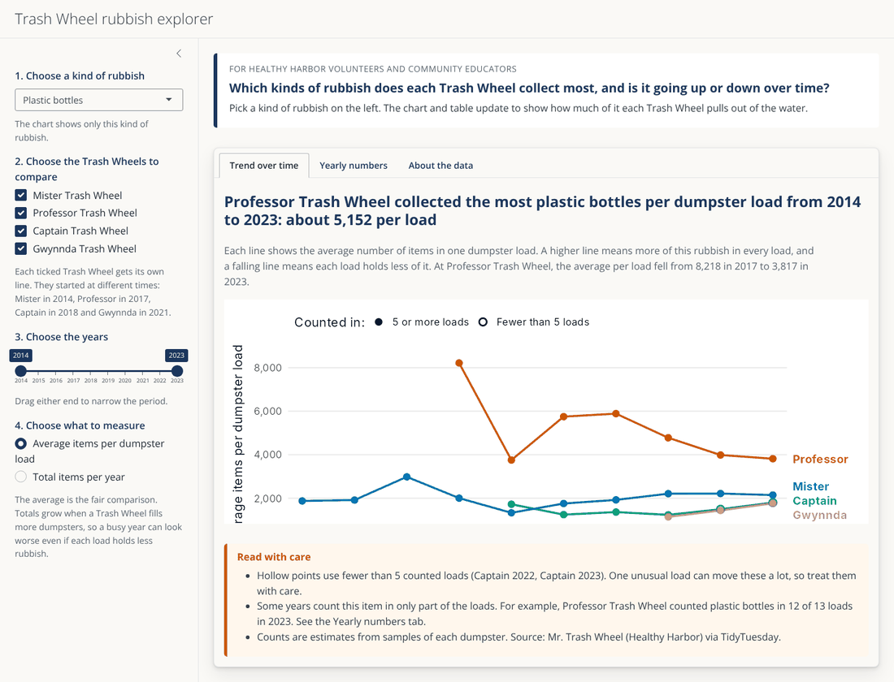
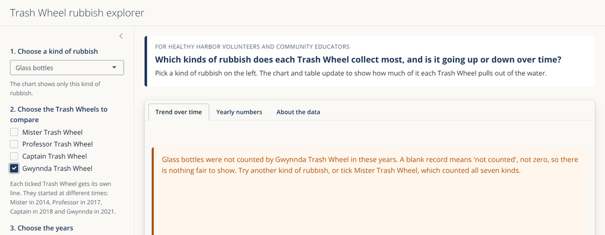
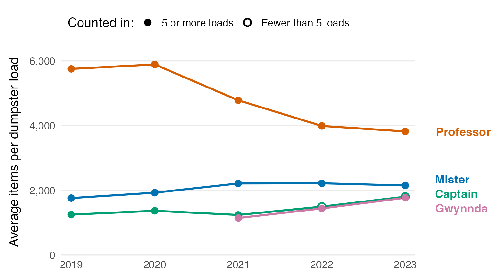

Baltimore’s four Trash Wheels sit at the mouths of streams and rivers and lift floating rubbish out of the water before it reaches the harbour. Every full dumpster is recorded, along with estimated counts of seven kinds of rubbish.
This package is for Healthy Harbor volunteers and community educators who want to answer one question:
Which kinds of rubbish does each Trash Wheel collect most, and is it going up or down over time?
This guide shows how to install the package, use the app, read its results, and do the same analysis in your own R code.
1. Install the package
Install the package from GitHub with the remotes
package:
# install.packages("remotes")
remotes::install_github("ETC5523-2026/etc5523-assignment-4-prat0012-ai")Then load it:
2. Launch the app
run_app()The app opens in your web browser. It uses the data inside the package, so it needs no other files or internet connection.

3. Use the controls
The controls on the left are numbered in the order you would normally use them.
| Control | What it does |
|---|---|
| 1. Choose a kind of rubbish | Picks one of the seven kinds of rubbish, for example plastic bottles or cigarette butts. Everything on the page then describes only this kind. |
| 2. Choose the Trash Wheels to compare | Each ticked Trash Wheel gets its own line. They started at different times: Mister in 2014, Professor in 2017, Captain in 2018 and Gwynnda in 2021. |
| 3. Choose the years | Drag either end of the slider to narrow the period. |
| 4. Choose what to measure | Average items per dumpster load is the fair comparison. Total items per year shows how much was collected in total. |
The page has three tabs. Trend over time shows the chart, Yearly numbers shows the exact figures behind it, and About the data explains every field and where the data come from.
4. Read the results
The headline above the chart states the main result for your current choices. It names the Trash Wheel with the highest value and gives the number. The sentence below it explains how to read the chart and whether the leading Trash Wheel’s numbers rose or fell over the chosen years.
In the chart, each line is one Trash Wheel and its name sits at the end of the line. A higher line means more of that rubbish. A falling line means less of it over time.
Solid points are based on 5 or more counted dumpster loads. Hollow points are based on fewer than 5, so one unusual load can move them a lot. Treat them with care.
The orange Read with care box lists anything in your selection that could mislead, such as a Trash Wheel that did not count the chosen item, or a year where the item was counted in only some of the loads.
Why the average per load matters
The number of dumpsters filled changes a lot from year to year and from wheel to wheel. Mister Trash Wheel filled 44 dumpsters in 2014 but 93 in 2018. A bigger total can simply mean more dumpsters, not dirtier water.
Wrappers show this clearly. Mister Trash Wheel collected the most wrappers in total, but Professor Trash Wheel collected the most in each dumpster load:
wrappers <- summarise_rubbish(trash_loads, item = "Wrappers")
# Highest total: Mister Trash Wheel
totals <- tapply(wrappers$total_items, wrappers$wheel, sum, na.rm = TRUE)
round(totals)
#> Captain Trash Wheel Gwynnda Trash Wheel Mister Trash Wheel
#> 6580 152920 898129
#> Professor Trash Wheel
#> 843082
# Highest average per load: Professor Trash Wheel
loads_counted <- tapply(wrappers$loads_counted, wrappers$wheel, sum)
round(totals / loads_counted)
#> Captain Trash Wheel Gwynnda Trash Wheel Mister Trash Wheel
#> 1645 1485 1428
#> Professor Trash Wheel
#> 7461This is why the app starts with the average per load.
When there is nothing fair to show
Some Trash Wheels never counted some kinds of rubbish. For example, Gwynnda Trash Wheel never counted glass bottles. A blank record means “not counted”, not zero, so the app does not draw a misleading line at zero. It explains what is missing and suggests what to try instead.

5. Do the same analysis in R
The app is built from two functions that you can use yourself.
summarise_rubbish() gives one row per Trash Wheel and
year:
bottles <- summarise_rubbish(
trash_loads,
item = "Plastic bottles",
years = c(2019, 2023)
)
bottles
#> # A tibble: 18 × 6
#> wheel year loads_collected loads_counted total_items items_per_load
#> <chr> <int> <int> <int> <dbl> <dbl>
#> 1 Captain Trash… 2019 5 5 6233 1247.
#> 2 Captain Trash… 2020 6 6 8190 1365
#> 3 Captain Trash… 2021 6 6 7420 1237.
#> 4 Captain Trash… 2022 3 3 4480 1493.
#> 5 Captain Trash… 2023 4 4 7200 1800
#> 6 Gwynnda Trash… 2021 51 51 58232 1142.
#> 7 Gwynnda Trash… 2022 83 83 119310 1437.
#> 8 Gwynnda Trash… 2023 86 86 151870 1766.
#> 9 Mister Trash … 2019 66 66 115985 1757.
#> 10 Mister Trash … 2020 72 72 138560 1924.
#> 11 Mister Trash … 2021 58 58 128150 2209.
#> 12 Mister Trash … 2022 57 57 126280 2215.
#> 13 Mister Trash … 2023 62 62 133110 2147.
#> 14 Professor Tra… 2019 15 15 86257 5750.
#> 15 Professor Tra… 2020 13 13 76550 5888.
#> 16 Professor Tra… 2021 15 15 71700 4780
#> 17 Professor Tra… 2022 16 16 63800 3988.
#> 18 Professor Tra… 2023 13 12 45800 3817.plot_rubbish() draws the same chart as the app:
plot_rubbish(bottles, measure = "per_load")
From 2019 to 2023, Professor Trash Wheel collected the most plastic bottles in each load, but its average fell from about 5,750 to about 3,800 per load. The other three Trash Wheels stayed between about 1,100 and 2,200 per load.
6. Limits to keep in mind
- Counts are estimates. The Trash Wheel team counts a sample of each dumpster and scales it up.
- The data show what was collected, not why. A fall could come from less litter, less rain washing rubbish into the streams, or changes in how the counts were made.
- Not every item was counted everywhere. Check the Yearly numbers tab before comparing Trash Wheels.
Data source
Mr. Trash Wheel, part of Baltimore’s Healthy Harbor initiative (https://www.mrtrashwheel.com/), shared through
TidyTuesday on 5 March 2024. The script
data-raw/trash_loads.R in the GitHub repository shows every
cleaning step.